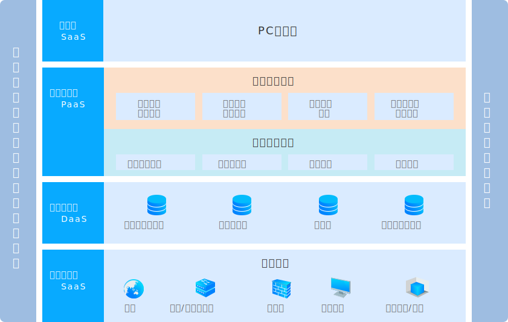
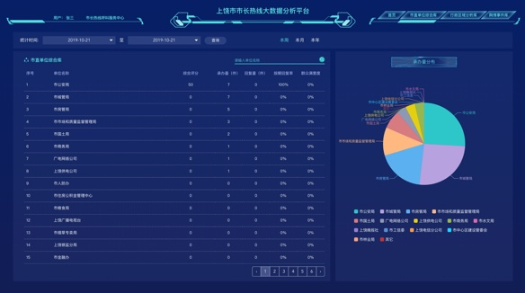

民生大数据
决策科学民主化、政务公开化、社会管理高效化
一个实时、全面感知的民生大数据分析平台，利用语义分析、数据挖掘等大数据分析技术，实时发现诉求热点，为政府提供舆情监测等服务，为政府的科学决策提供重要的民意参考和依据。

系统架构
基础设施层（IaaS）： 提供虚拟机或其他资源作为服务提供给用户，包括网络资源，主机，交换器，防火墙，桌面终端等。
数据中心层（DaaS）： 数据即服务层，主要作用是提供各种资源库。
应用支撑层（PaaS）： 即平台服务层，主要作用是将开发平台提供给用户。该层包括各种组件的定义和各种子功能等。
应用层（SaaS）： 软件即服务层，主要是PC端展示大数据分析结果。

核心技术
主要体现在通过自然语言技术自动生成舆情事件库，实现社会热点发现。
- 数据清洗
- 分词
- 去停用词
- 文本的模型表示
- 文本相似度计算
- 聚类算法
- 热度计算
应用案例

上饶市人民政府市长热线电话办公室
2018年9月正式交付使用
如果您对民生大数据平台感兴趣，请与我们联系！
0793-8161215